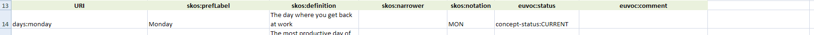
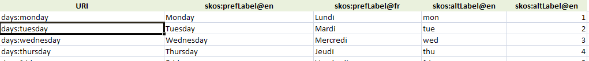
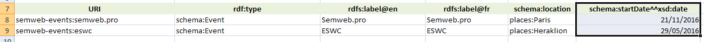
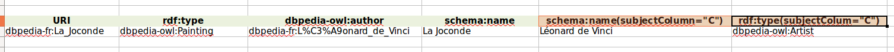
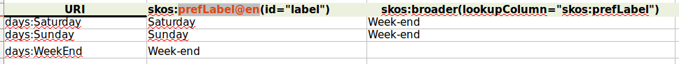
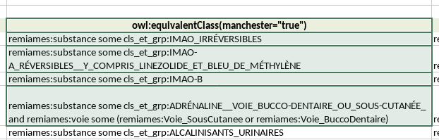

This is an Excel-to-RDF converter. It can generate RDF files from Excel spreadsheets structured in a specific way, and contains specific features for SKOS.
Using the same Excel spreadsheet structure, it is possible to produce any RDF, not only SKOS (lists of foaf:Person, of schema:Event, SHACL, OWL, etc.)
This converter does not require any configuration file to work, only the Excel document to convert.
No. The spreadsheet has to follow the specific structure described below.
Start by downloading and looking at one of the provided examples in the SKOS-Play form. You can start from one of these files and adapt it. Look at the documentation below for an explanation on the expected spreadsheet format.
We use this tool in our daily work with RDF, OWL, SHACL, SKOS, DCAT and more. We can tell you it works, and it works fine. Our clients use it, too, and they like it. I am not far from thinking it is actually the best out there. Ho, and it costs 0, is open-source on Github, and comes with a command-line version.
There are other converters from Excel to SKOS or RDF out there :
Your excel file MUST follow the structure described below to be converted to RDF. Otherwise you will get an exception or an empty RDF file. Download and look at the examples above.
Your file can contain any number of sheets. All the sheets are processed, and the extractor attempts to convert RDF from all of them. If the structure of a sheet doesn't correspond to the expected template, the converter simply moves to the next one.
skos:ConceptScheme.
ConceptScheme metadata : The header CAN contain descriptive metadata of the ConceptScheme, by specifying a property URI in column A, either using a declared prefix
(e.g. dct:title, see below) or as a full URI (starting with 'http');
Prefix declaration : Prefixes can be declared in the header :
skos:prefLabel, skos:definition), except column A,
that will contain the URI for each resource being generated.
This is how a typical title row can look like :

Line : Each line after the title row generates one resource with the URI read from column A. The column A MUST contain the URI of a resource, either as a
full URI (starting with 'http'), or using a declared prefix.
Cell : Each cell in a line is processed, and the value is converted to a literal or object property :
, ;@en (or another language code) to the property declaration in the title row.
This also works in the header part for the metadata of the ConceptScheme.
This is an example of multilingual columns declaration :

^^xsd:date (or another datatype) to the property declaration in the title row.
This is an example of columns declaration with a datatype :

(separator=",") (or another separator) to the property declaration in the title row.
This indicates that the values in the cells of that columns will be splitted on that separator, and multiple values will be generated.
You can combine this with a language or datatype declaration, for example schema:name@en(separator=",").
rdf:type;^skos:member; note the '^' character at the beginning of the column name; this tells the converter to generate the corresponding property (here, skos:member)
from the value given in the cell to the URI of the resource generated for this row;
skos:Collection in the rdf:type column; for rows corresponding to skos:Concept, you can leave this column empty
or specify skos:Concept explicitely if you want;^skos:member column;rdf:type;skos:memberList;skos:OrderedCollection in the rdf:type column; for rows corresponding to skos:Concept, you can leave this column empty
or specify skos:Concept explicitely if you want;skos:memberList column, write the list of values like you would do in the Turtle, that is :
skos:inScheme is added to every instance of skos:Concept and skos:Collection, with the value of the ConceptScheme given in cell B1;
skos:broader and skos narrower inverse : the inverse of skos:broader and skos:narrower are automatically added;
skos:hasTopConcept and skos:topConceptOf : every skos:Concept without skos:broader or not referenced by a skos:narrower is given a skos:topConceptOf
and its inverse skos:hasTopConcept;
SKOS-XL generation : if requested by the corresponding parameter, labels are turned into SKOS-XL;
rdf:type column to your data, and specify an explicit rdf:type for each row. Each row not having an explicit rdf:type will be considered a skos:Concept;subjectColumn with a reference to the column letter containing the URI of the subject.
For example schema:name(subjectColumn="N") means this column is the name of the URI stored in column N.
This is how such a header could look like :

skos:definition contains the following value :[ rdf:value "Definition blah blah"; dcterms:created "2017-02-21"^^xsd:date ], then a reference to a blank node will be created. You need to use the prefixes defined in the file in your
blank node content. The blank node is parsed exactly as a piece of Turtle, so it can contain any piece of valid Turtle syntax. If anything goes wrong during the parsing, the converter
will generate a Literal with the cell content instead.
_:_:, then it is interpreted as a blank node identifier. This allow to refer to that blank node as the subject of other triples using the subjectColumn parameter of the header of another column.
This is how it would look like :ex:TEST ex:value [ rdfs:label "the label"@en ]
(ex:concept1 ex:concept2 ex:concept3). You need to use the prefixes defined in the file in your list content. The list is parsed exactly as a piece of Turtle;
if anything goes wrong during the parsing, the converter will generate a Literal with the cell content instead.
asList = "true" parameterex:TEST ex:value (ex:1 ex:2) instead of ex:TEST ex:value ex:1, ex:2
skos:broader. But URIs can be opaque, and copy-pasting concept URIs across cells can be tedious. The lookupColumn parameter is a mechanism
that allows you to reference a concept URI through one of its label (or other unique key) stored in another column. To use it, add a column parameter
lookupColumn with a reference to the column in which the string value of this column will be searched. The reference can be either a reference to the
Excel column letter or to the corresponding property in which you want to lookup. A typical example is skos:broader(lookupColumn=skos:prefLabel),
which means that you want to create a skos:broader having as a value the URI of the Concept that have in its skos:prefLabel column the value you indicate
in your skos:broader column.
This is how it would look like, have a look at example 8 in the included examples :

You can view the lookupColumn parameter as the equivalent of Excel "VLOOKUP" / "RECHERCHEV" function, except easier to write.
lookupColumn parameter described above works only to search for a URI within the same sheet. It may be the case that you would like to create a link
to an entity that is defined in another sheet of the same file. In that case :
reconcile="local" column parameter in the column that contains the label of the entity you want to search for.reconcileOn="http://..." column parameter to restrict the reconciliation either on the rdf:type or the skos:inScheme of the values
you would like to search for.reconcile
parameter.
The reconciliation is done on the following properties :
rdfs:labelskos:prefLabelskos:altLabelskos:notationfoaf:namedct:titledc:titledct:identifierdc:identifierschema:namesome, only, and, or, parenthesis, etc. These class expressions, if you want to produce them by stating the corresponding triples, turn out to be
horribly difficult to produce.
That's why this Excel converter integrates the OWLAPI to benefit from its
OWL Manchester syntax parser, in order to be able to parse class expressions like :x some :A and not(:y some :B), and get the corresponding triples out.
This is useful to create and maintain full-fledged OWL ontologies in Excel tables.
(manchester="true") to the property declaration in the title row (which would typically be owl:equivalentClass or rdfs:subClassOf if you are editing an OWL ontology),
in order to instruct the converter to actually parse the cells of this column using the Manchester syntax parser.
Make sure you use prefixed URIs in your class expressions, using any the prefixes known in your spreadsheet.
This is how it looks like:

ignoreIfParenthesis="true" to the column header parameters to ignore the values if they are between parenthesis. This can be combined with a separator, e.g.
skos:broader(separator=";" ignoreIfParenthesis="true"). In this case, if the cell value is "pollution;(water pollution)" then water pollution will be ignored.
This can be used to maintain temporary values in the spreadsheet, waiting for further validation.
asList="true" indicate that all values of this column that are expressed on the same subject should instead be put in an RDF List. Instead of ex:A ex:p ex:1, ex:2, ex:3 this would generate ex:A ex:p (ex:1 ex:2 ex:3). Note that the order of items is **not** garanteed.id="theLabel" : specifies the columnId to be used as a reference in subjectColumn or lookupColumn parametersignoreIf="xxx" indicate that the value xxx should be ignored when present in this columnignoreIfParenthesis="true" whether to ignore the values if they are in parenthesislookupColumn="skos:prefLabel" or lookupColumn="columnId" or lookupColumn="C" : specifies the column to lookup the literal values to be converted to URIsmanchester="true" : Indicate that the values of this column should be parsed as Manchester OWL syntax class expressionsreconcile="local" or reconcile="external" : whether to reconcile the value either locally or to an external reconcile endpoint (not implemented yet)separator=";" : specifies the separator to split cell in multiple valuessubjectColumn="dcterms:creator" or subjectColumn="columnId" or subjectColumn="C" : specifies the column containing the URI of the subject for predicates generated from this column